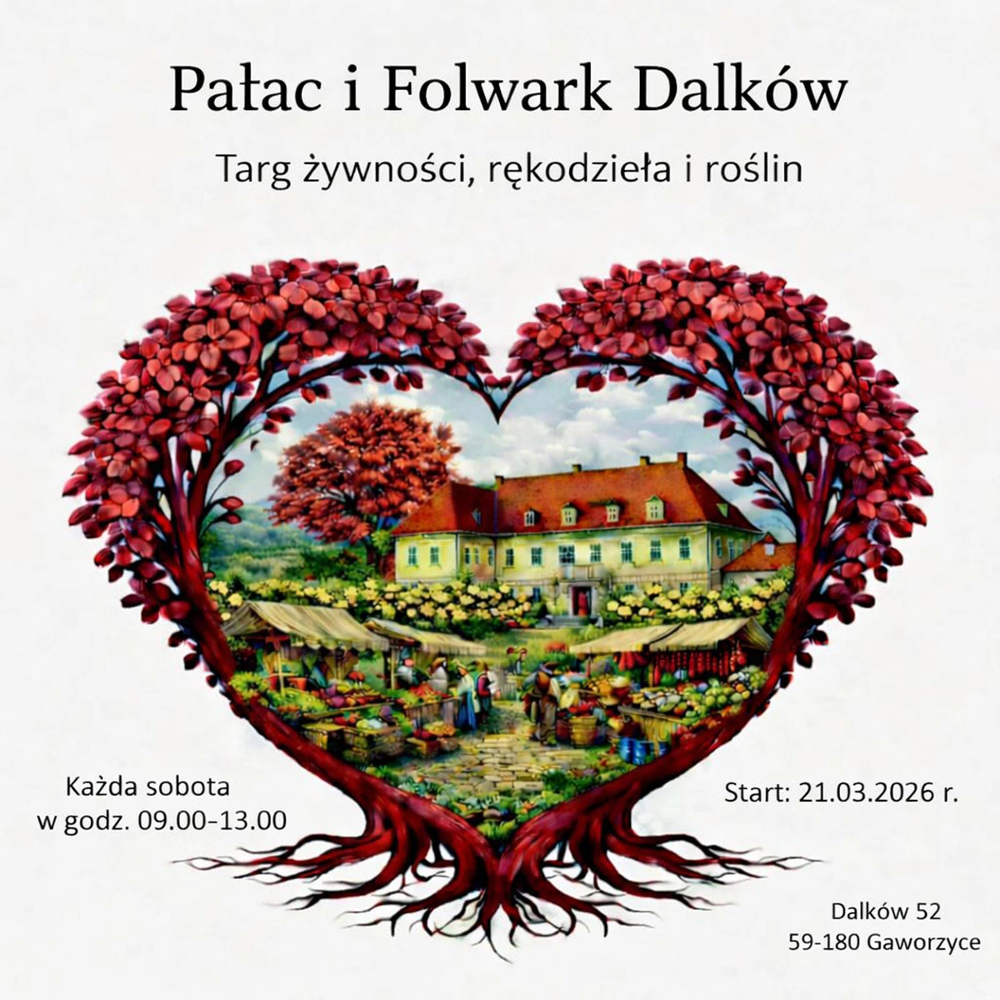
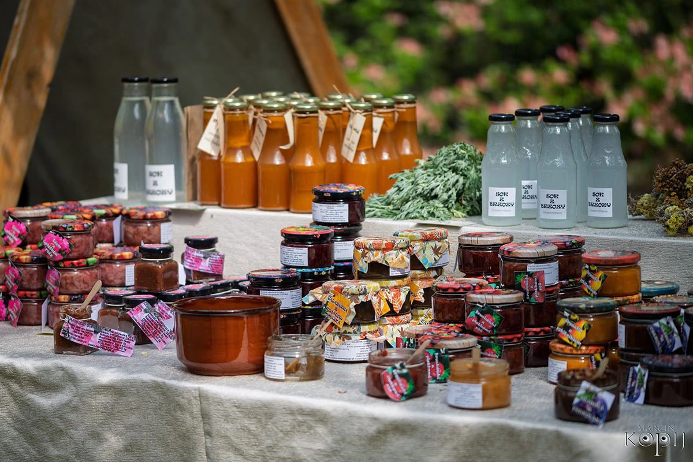
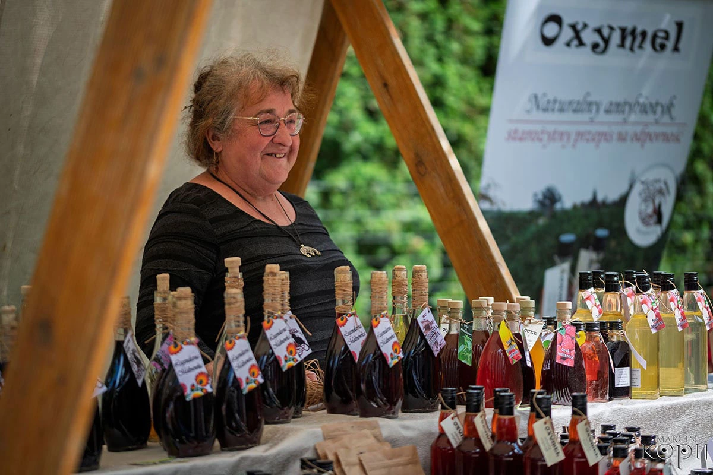
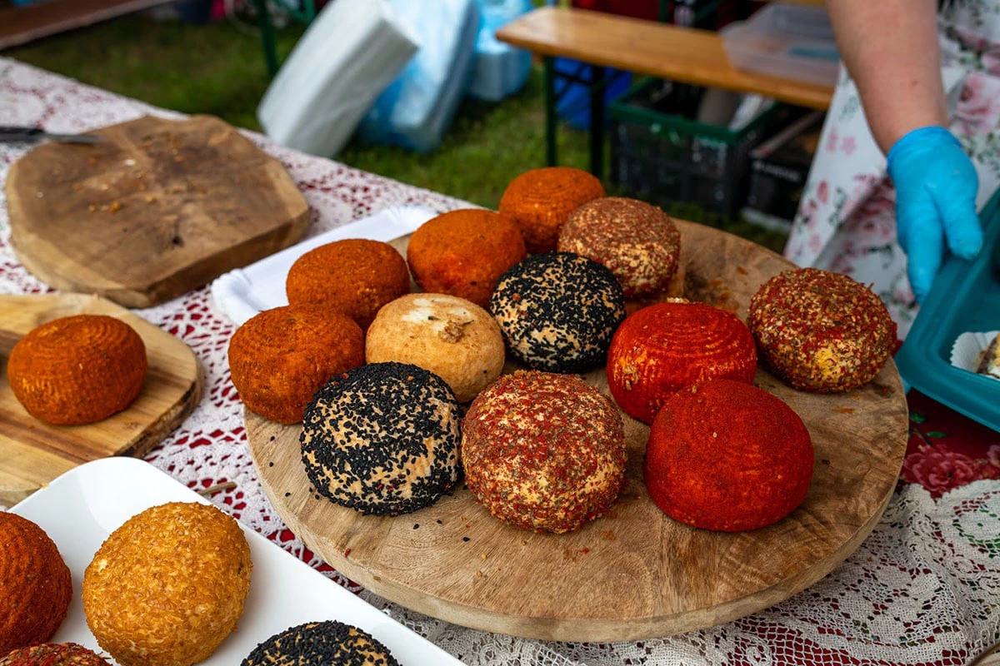
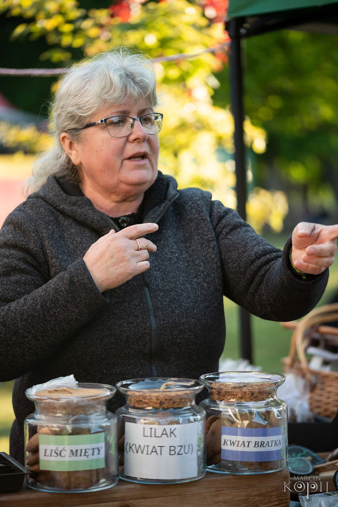
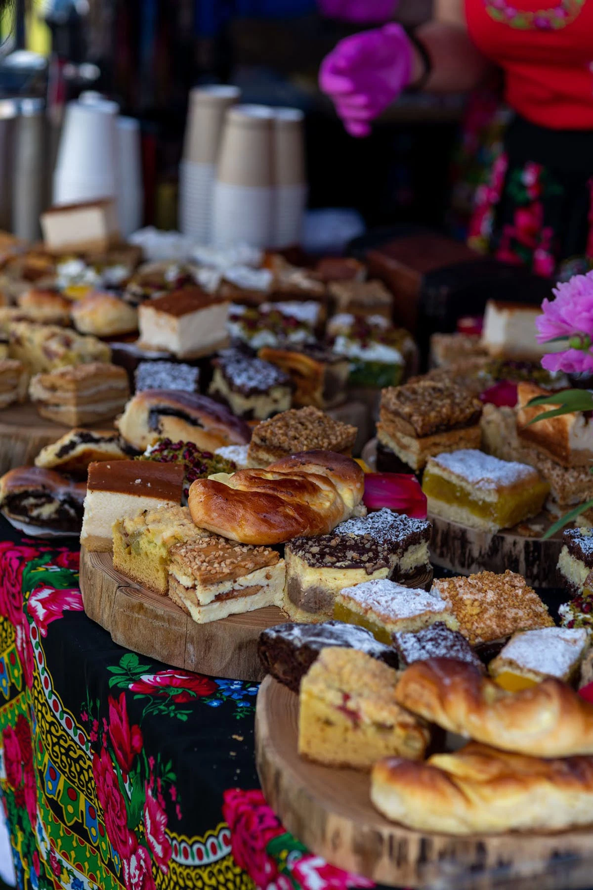
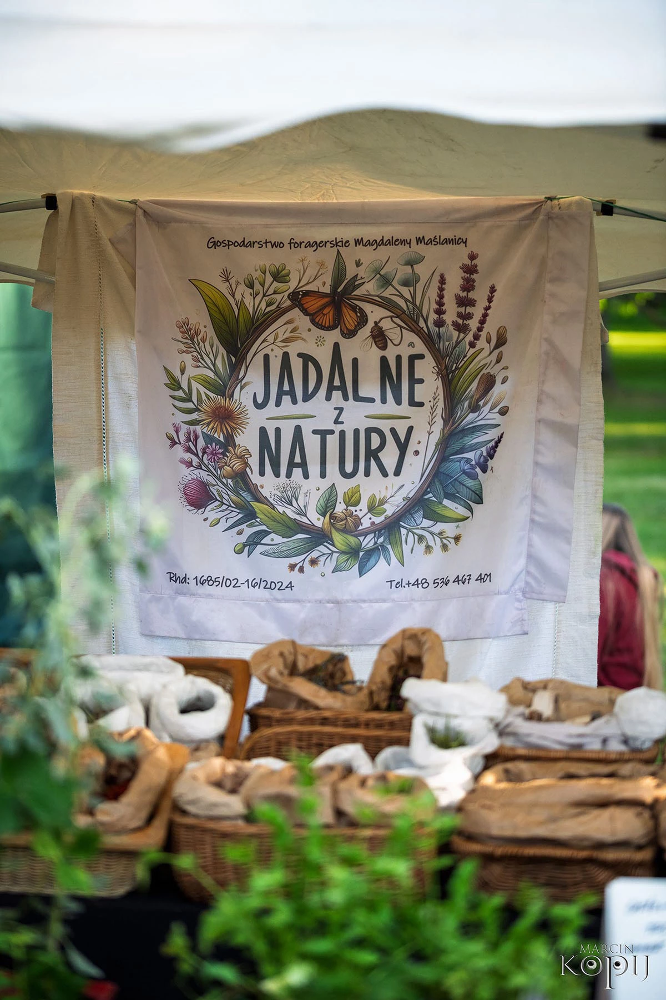

No Code Website Builder
Od 21.03.2026 r., w każdą sobotę w godz. 9-13.00 na terenie przypałacowego folwarku w Dalkowie będzie odbywał się Targ żywności, rękodzieła i roślin. Na miejscu będzie można kupić przede wszystkim żywność prosto od producentów lokalnych, rolników, rzemieślników w tym: pieczywo z rodzinnych piekarni, warzywa i owoce, sery (krowie, kozie, owcze), jaja z wolnego wybiegu, wędliny, kiełbasy, pasztety i inne wyroby mięsne, miody naturalne, soki, syropy, przetwory, herbaty, susze ziołowe i wiele innych. Na Targach obecni będą również wystawcy z rękodziełem. W Centrum Hortiterapii znajduje się również stacjonarny punkt sprzedaży roślin od Szkółki Drzew i Krzewów Józef Płocha z bogatą ofertą roślin kwitnących szczególnie róż, azalii, rododendronów i bylin.

Każda sobota od 21.03.2026, w godzinach od 9:00 do 13:00.
Folwark przypałacowy (Dalków 52, 59-180 Gaworzyce). W sąsiedztwie Centrum Hortiterapii-Ogrody Zmysłów, zabytkowy pałac i park z Europejskim Drzewem Roku 2025 oraz Szkółka Drzew i Krzewów Józef Płocha.
Pierwszego dnia kalendarzowej wiosny (21 marca 2026) zapraszamy na pierwszy Targ żywności, rękodzieła i roślin. W późniejszym czasie Targi będą odbywać się w każdą sobotę w godzinach 09.00-13.00 na terenie folwarku przypałacowego w przepięknej scenerii remontowanego XVI-wiecznego pałacu. W trakcie pierwszych Targów o godzinie 12.00 odbędzie się również prezentacja mechanizmu działania pałacowych okien w stylu angielskim (unoszonych góra-dół) – zachęcamy by zakupić bilet do Centrum Hortiterapii-Ogrodów Zmysłów aby uczestniczyć w pokazie z bliska w celu jak najlepszego, bezpośredniego odbioru. Terminy kolejnych pokazów będą pojawiać się na bieżąco na stronie www.facebook.com/fundacjadalkow
Co będzie można kupić na miejscu? Przede wszystkim żywność prosto od producentów lokalnych, rolników, rzemieślników:
• Pieczywo z rodzinnych piekarni
• Warzywa i owoce prosto od rolnika
• Sery (krowie, kozie)
• Jaja od szczęśliwych kurek
• Wędliny, kiełbasy, pasztety i inne wyroby mięsne
• Miody naturalne
• Soki, syropy, przetwory
• Herbaty, susze ziołowe
Do współpracy zapraszamy również rękodzielników z produktami tworzonymi z sercem, w tym naturalne kosmetyki, ręcznie robiona biżuteria, dekoracje z ekologicznego sznurka i wiele innych.
Na miejscu znajduje się również stacjonarny punkt sprzedaży drzew i krzewów ozdobnych, w tym kwitnących w sezonie azalii, rododendronów, róż, hortensji, bylin od Szkółki Drzew i Krzewów Józef Płocha.
O nasze podniebienia zadbają lokalne Koła Gospodyń Wiejskich przygotowując ofertę kulinarną w tym dania na ciepło i ciasta. W przypałacowej XIX-wiecznej stajni z oryginalnymi boksami dla koni będzie unosić się zapach aromatycznej kawy z własnej palarni.
W scenerii przypałacowej utworzymy strefę relaksu z leżaczkami i stolikami.
Ważne informacje:
• Targi będą odbywać się na terenie niebiletowanym.
• W bezpośrednim sąsiedztwie miejsca, w którym będą odbywać się Targi znajduje się utwardzony parking.
• Chętni będą mogli zakupić również bilet wstępu do Centrum Hortiterapii-Ogrody Zmysłów na Wzgórzach Dalkowskich z kolekcją ponad 70 odmian róż w ilości ponad 800 sztuk i labiryntem grabowym oraz zabytkowego parku w Dalkowie, w którym znajduje się arboretum kilkuset rododendronów i azalii w kilkudziesięciu kolorach a także Europejskie Drzewo Roku 2025 – 300-letni buk purpurowy.
• W Dalkowie znajduje się Strefa Informacji Turystycznej oraz rozpoczynają się cztery szlaki turystyczne po Wzgórzach Dalkowskich zaprojektowane w formie pętli o długości ok. 4 km, 6 km, 10 km i 12 km. Przy okazji zakupów można zrobić tego dnia wycieczkę w tzw. "Małe Bieszczady".
• Na terenie przypałacowego folwarku rozpoczyna się szlak z tablicami, na których podczas zakupów będzie można przeczytać Pamiętnik Luise von Liebermann z Dalkowa – zapisków dokonywanych przez córkę właścicieli pałacu w Dalkowie ponad 200 lat temu z wykonanymi do nich stylizowanymi fotografiami autorstwa Marcina Kopija.
Zapraszamy już 21 marca 2026 r. na pierwszy Targ żywności, rękodzieła i roślin w Dalkowie.
Kontakt dla Wystawców: tel. 663 436 260, mail: targdalkow@gmail.com






No Code Website Builder